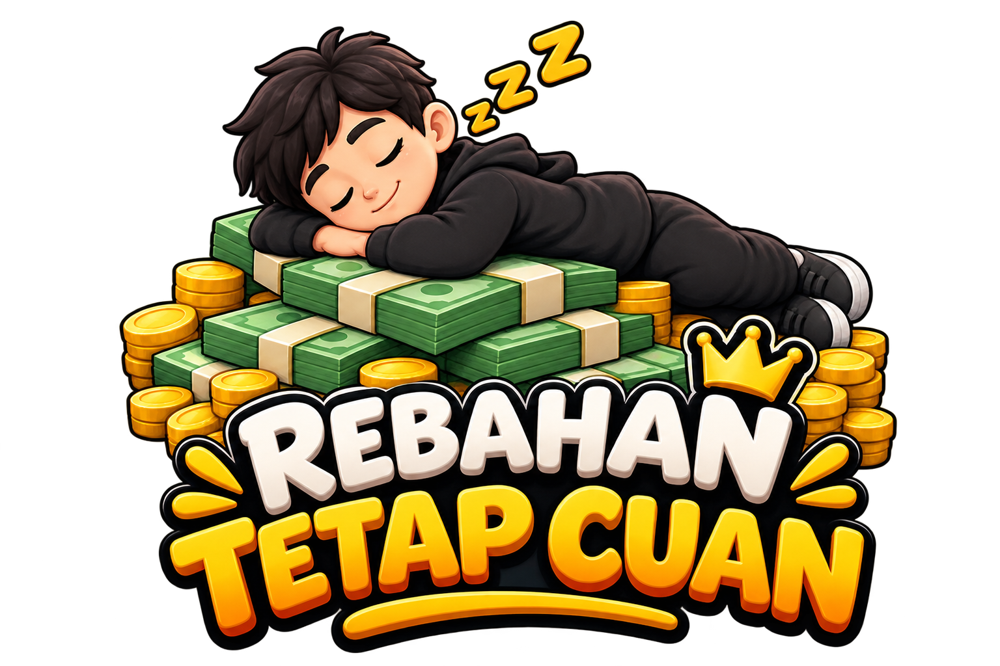

BELAJAR PRODUK DIGITAL • DARI RUMAH
Rebahan Tetap Cuan
Bisnis digital dari rumah, gak perlu ribet.

DARI PENGALAMAN SENDIRI
Gak langsung jago.
Aku juga mulai dari nol.
Halo, aku Jeki.
Aku juga masih pemula.
Sebagai seorang santri, waktu yang aku punya cukup terbatas. Jadi aku mencari cara supaya tetap bisa belajar dan mencoba menghasilkan sesuatu dari rumah tanpa harus mengorbankan aktivitas utama.
Sebelum mengenal produk digital, aku sempat mencoba beberapa cara seperti affiliate, reseller, dropship, sampai jualan secara offline.
Tapi ternyata masing-masing punya tantangan.
Sampai akhirnya aku mengenal produk digital.
Dari situ aku mulai melihat bahwa ada cara yang lebih sederhana untuk memulai.
Tidak perlu menyimpan barang. Tidak perlu packing. Tidak perlu mengirim barang satu per satu.
Bukan berarti langsung sukses.
Aku juga masih belajar.
Tapi setidaknya sekarang aku punya sesuatu yang bisa dipelajari dan dikembangkan dari rumah, dengan waktu yang lebih fleksibel.
Cerita & pengalaman
Video ini sementara placeholder. Nanti bisa diganti dengan testimonial, YouTube, Drive, atau video sendiri.
Kenapa aku akhirnya memilih produk digital?
Bukan karena semuanya jadi mudah. Tapi karena alurnya terasa lebih masuk akal untuk kondisi dengan waktu dan ruang yang terbatas.
Yang Akan Kamu Dapatkan
Klik materi untuk melihat penjelasan singkatnya.
Tempat untuk screenshot order pertama / “pecah telur”
Bagian ini sengaja dibuat kosong agar bukti yang ditampilkan benar-benar berasal dari pengalaman nyata.
opsional
MULAI DARI YANG SEDERHANA.
Belajar dulu.
Praktik kemudian.
Kalau kamu sedang mencari titik awal untuk belajar produk digital, materi ini disusun supaya kamu punya jalur yang lebih jelas.
Empat tahap besar yang saling nyambung. Materi Meta Ads diletakkan terakhir supaya kamu memahami fondasinya terlebih dahulu.
06 / MULAI
Yakin mau nunda lagi?
Gak harus langsung jago. Yang penting mulai, pelajari, lalu praktikkan.
Mulai Belajar Produk Digital ↗